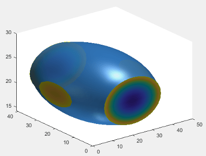
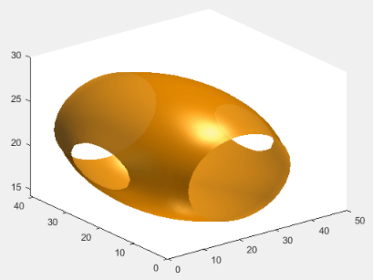

Managing Properties of Chart Classes
When you develop a custom chart as a subclass of the ChartContainer
base class, you can use certain techniques to make your code more robust, efficient, and
tailored to the needs of your users. These techniques focus on how you define and manage
the properties of your class. Use any that are helpful for the type of visualization you
want to create and the user experience you want to provide.
Initialize property values — Set the default state of the chart in case your users call the implicit constructor without any input arguments.
Validate property values — Ensure that the values are valid before using them to perform a calculation or configure one of the underlying graphics objects in your chart.
Customize the property display — Provide a customized list of properties when a user references the chart object without semicolon.
Optimize the
updatemethod — Improve the performance of theupdatemethod when only a subset of your properties are used in a time-consuming calculation.
Initialize Property Values
Assign default values for all of the public properties of your class. Doing so configures a valid chart if the user omits some of the name-value pair arguments when they call the constructor method.
For properties that store coordinate data, set the initial values to
NaN values or empty arrays so that the default chart is empty
when the user does not specify the coordinates. Choose the default coordinates
according to the requirements of the plotting functions you plan to call in your
class methods. To learn about the requirements, see the documentation for the
plotting functions you plan to use.
Validate Property Values
A good practice is to verify the values of your class properties before your code uses those values. A convenient way to do this is to validate the size and class of the properties as you define them. For example, this property block validates the size and class of four properties.
properties IsoValue (1,1) double = 0.5 Enclose {mustBeMember(Enclose,{'above','below'})} = 'below' CapVisible (1,1) matlab.lang.OnOffSwitchState = 'on' Color (1,3) double {mustBeGreaterThanOrEqual(Color,0),... mustBeLessThanOrEqual(Color,1)} = [.2 .5 .8] end
IsoValuemust be a 1-by-1 array of classdouble.Enclosemust have a value of either'above'or'below'.CapVisiblemust be a 1-by-1 array of classmatlab.lang.OnOffSwitchState.Colormust be a 1-by-3 array of classdouble, where each value is in the range[0,1].
You can also validate properties that store the underlying graphics objects in
your chart. To determine the class name of an object, call the corresponding
plotting function at the command line, and then call the class
function to get the class name. For example, if you plan to call the
patch function in your setup method,
call the patch function at the command line with an output
argument (the input arguments do not matter). Then pass the output to the
class function to get its class
name.
x = patch(NaN,NaN,NaN); class(x)
ans =
'matlab.graphics.primitive.Patch'Use the output of the class function to validate the class
for the corresponding property in your class. For example, each of the following
properties stores a Patch
object.
properties (Access = private,Transient,NonCopyable) IsoPatch (1,1) matlab.graphics.primitive.Patch CapPatch (1,1) matlab.graphics.primitive.Patch end
Occasionally, you might want to define a property that can store different shapes and classes of values. For example, if you define a property that can store a character vector, cell array of character vectors, or string array, omit the size and class validation or use a custom property validation method.
For more information about validating properties, see Validate Property Values.
Customize the Property Display
One of the benefits of defining your chart as a subclass of the
ChartContainer base class is that it also inherits from the
matlab.mixin.CustomDisplay class.
Thus, you can customize the list of properties MATLAB® displays in the Command Window when you reference the chart without a
semicolon. To customize the property display, overload the getPropertyGroups method.
Within that method, you can customize which properties are listed and the order of
the list. For example, consider an IsoSurfCapChart class that has
the following public
properties.
properties IsoValue (1,1) double = 0.5 Enclose {mustBeMember(Enclose,{'above','below'})} = 'below' CapVisible (1,1) matlab.lang.OnOffSwitchState = 'on' Color (1,3) double {mustBeGreaterThanOrEqual(Color,0),... mustBeLessThanOrEqual(Color,1)} = [.2 .5 .8] end
The following getPropertyGroups method specifies the scalar
object property list as Color, IsoValue,
Enclose, and
CapVisible.
function propgrp = getPropertyGroups(obj) if ~isscalar(obj) % List for array of objects propgrp = getPropertyGroups@matlab.mixin.CustomDisplay(obj); else % List for scalar object propList = {'Color','IsoValue','Enclose','CapVisible'}; propgrp = matlab.mixin.util.PropertyGroup(propList); end end
When the user references an instance of this chart without a semicolon, MATLAB displays the customized list.
c = IsoSurfCapChart
c =
IsoSurfCapChart with properties:
Color: [0.2000 0.5000 0.8000]
IsoValue: 0.5000
Enclose: 'below'
CapVisible: on
For more information about customizing the property display, see Customize Property Display.
Optimize the update Method
In most cases, the update method of your class reconfigures all
the relevant aspects of your chart that depend on the public properties. Sometimes,
the reconfiguration involves an expensive calculation that is time consuming. If the
calculation involves only a subset of the properties, you can design your class to
execute that code only when it is necessary.
One way to optimize the update method is to add these
components to your class:
Define a private property called
ExpensivePropChangedthat accepts alogicalvalue. This property indicates whether any of the properties used in the expensive calculation have changed.Write a
setmethod for each property involved in the expensive calculation. Within eachsetmethod, set theExpensivePropChangedproperty totrue.Write a protected method that performs the expensive calculation.
Write a conditional statement in the
updatemethod that checks the value ofExpensivePropChanged. If the value istrue, execute the method that performs the expensive calculation.
The following code provides a simplified implementation of this design.
classdef OptimizedChart < matlab.graphics.chartcontainer.ChartContainer properties Prop1 Prop2 end properties(Access=private,Transient,NonCopyable) ExpensivePropChanged (1,1) logical = true end methods(Access = protected) function setup(obj) % Configure chart % ... end function update( obj ) % Perform expensive computation if needed if obj.ExpensivePropChanged doExpensiveCalculation(obj); obj.ExpensivePropChanged = false; end % Update other aspects of chart % ... end function doExpensiveCalculation(obj) % Expensive code % ... end end methods function set.Prop2(obj,val) obj.Prop2 = val; obj.ExpensivePropChanged = true; end end end
Prop2 is involved in the
expensive calculation. The set.Prop2 method sets the value of
Prop2, and then it sets
ExpensivePropChanged to true. Thus, the
next time the update method runs, it calls
doExpensiveCalculation only if
ExpensivePropChanged is true. Then the
update method continues to update other aspects of the
chart.Example: Optimized Isosurface Chart with Customized Property Display
Define an IsoSurfCapChart class for displaying an isosurface with the associated
isocaps. Include the following features:
Properties that use size and class validation
A customized property display
An optimized
updatemethod that recalculates theisosurfaceandisocapsonly if one or more of the relevant properties changed
To define this class, create a program file named
IsoSurfCapChart.m in a folder that is on the MATLAB path. Then implement the class by following the steps in the
table.
| Step | Implementation |
|---|---|
Derive from the |
classdef IsoSurfCapChart < matlab.graphics.chartcontainer.ChartContainer |
Define the public properties using class and size validation.
|
properties
VolumeData double = rand(25,25,25)
IsoValue (1,1) double = 0.5
Enclose {mustBeMember(Enclose,{'above','below'})} = 'below'
WhichCapPlane {mustBeMember(WhichCapPlane,{'all','xmin',...
'xmax','ymin','ymax','zmin','zmax'})} = 'all'
CapVisible (1,1) matlab.lang.OnOffSwitchState = 'on'
Color (1,3) double {mustBeGreaterThanOrEqual(Color,0),...
mustBeLessThanOrEqual(Color,1)} = [.2 .5 .8]
end |
Define the private properties.
|
properties(Access = private,Transient,NonCopyable)
IsoPatch (1,1) matlab.graphics.primitive.Patch
CapPatch (1,1) matlab.graphics.primitive.Patch
SmoothData double = [];
ExpensivePropChanged (1,1) logical = true
end |
Implement the |
methods(Access = protected)
function setup(obj)
ax = getAxes(obj);
% Create two Patch objects
obj.IsoPatch = patch(ax,NaN,NaN,NaN, 'EdgeColor', 'none', ...
'FaceColor',[.2 .5 .8],'FaceAlpha',0.9);
hold(ax,'on');
obj.CapPatch = patch(ax,NaN,NaN,NaN,'EdgeColor', 'none', ...
'FaceColor','interp');
% Configure the axes
view(ax,3)
camlight(ax, 'infinite');
camlight(ax,'left');
lighting(ax, 'gouraud');
hold(ax,'off');
end |
Implement the |
function update(obj) % Perform expensive computation if needed if obj.ExpensivePropChanged doExpensiveCalculation(obj); obj.ExpensivePropChanged = false; end % Update visibility of CapPatch and update color obj.CapPatch.Visible = obj.CapVisible; obj.IsoPatch.FaceColor = obj.Color; end |
Implement the |
function doExpensiveCalculation(obj) % Update isosurface obj.SmoothData = smooth3(obj.VolumeData,'box',7); [F,V] = isosurface(obj.SmoothData, obj.IsoValue); set(obj.IsoPatch,'Faces',F,'Vertices',V); isonormals(obj.SmoothData,obj.IsoPatch); % Update isocaps [m,n,p] = size(obj.SmoothData); [Xc,Yc,Zc] = meshgrid(1:n,1:m,1:p); [Fc,Vc,Cc] = isocaps(Xc,Yc,Zc,obj.SmoothData,obj.IsoValue,... obj.Enclose,obj.WhichCapPlane); set(obj.CapPatch,'Faces',Fc,'Vertices',Vc,'CData',Cc); end |
Implement the |
function propgrp = getPropertyGroups(obj) if ~isscalar(obj) % List for array of objects propgrp = getPropertyGroups@matlab.mixin.CustomDisplay(obj); else % List for scalar object propList = {'Color','IsoValue','Enclose','CapVisible',... 'WhichCapPlane','VolumeData'}; propgrp = matlab.mixin.util.PropertyGroup(propList); end end end |
Implement the |
methods
function set.VolumeData(obj,val)
obj.VolumeData = val;
obj.ExpensivePropChanged = true;
end
function set.IsoValue(obj, val)
obj.IsoValue = val;
obj.ExpensivePropChanged = true;
end
function set.Enclose(obj, val)
obj.Enclose = val;
obj.ExpensivePropChanged = true;
end
end
end |
Next, create an array of volume data, and then create an instance of
IsoSurfCapChart.
[X,Y,Z] = meshgrid(-2:0.1:2); v = (1/9)*X.^2 + (1/16)*Y.^2 + Z.^2; c = IsoSurfCapChart('VolumeData',v,'IsoValue',0.5)
c =
IsoSurfCapChart with properties:
Color: [0.2000 0.5000 0.8000]
IsoValue: 0.5000
Enclose: 'below'
CapVisible: on
WhichCapPlane: 'all'
VolumeData: [41×41×41 double]
Change the color of c and hide the isocaps.
c.Color = [1 0.60 0]; c.CapVisible = false;
